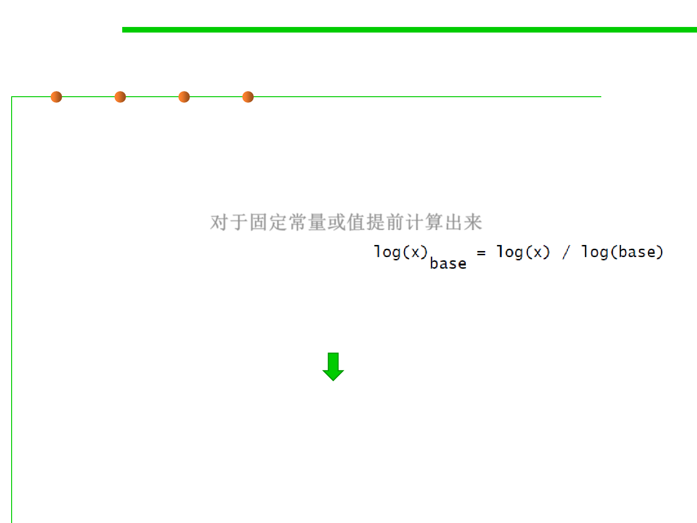

8.3 Code Tuning for Performance Optimization
Initialize at compile time
▪ If you’re using a named constant or a magic number in a routine call
and it’s the only argument, that’s a clue that you could precompute
the number, put it into a constant, and avoid the routine call. The
same principle applies to multiplications, divisions, additions, and
other operations. 对于固定常量或值提前计算出来
▪ Log() is time-consuming routine .
public static double log2(double value) {
return Math.log(value) / Math.log(2);
}
public final static double log2=0.69314718;
……
public static double log2(double value) {
return Math.log(value) / log2;
}